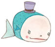
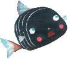
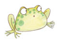
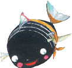

Bunu der demez bir öbek balık, Küçük Kara Balık’ı yakalamak üzere öne atılmış, ama arkadaşları onun çevresini sarmışlar, bir çırpıda güvenlikli bir yere kaçırmışlar.
Anne balık çıldıracak gibi olmuş.
“Aman Allahım!” diye haykırıyormuş, “ne yapacağım ben?”
“Benim için sakın ağlama anneciğim,” diye bağırmış Küçük Kara Balık. “Asıl şu sefil yaşlı balıklar için ağla sen!”

“Bize hakaret edemezsin küçük!” diye bağırmış yaşlı balıklardan biri.
Bir başkası da,
“Şimdi gidersen ve sonra pişman olup geri dönersen seni aramıza almayız,” demiş.
Üçüncü bir balık da Küçük Kara Balık’ı uyarmış:
“Bu çocukça hayallerin peşine takılmasan iyi edersin.”
Dördüncü bir balık atılmış:
“Buranın nesi var kuzum?”
Beşinci balıksa,
“Başka bir dünya yok. Dünya burası... Geri gel!” diye seslenmiş.
“Şimdi geri dönersen,” diye dil dökmüş altıncı balık, “senin çok akıllı bir küçük balık olduğuna inanacağız.”
Yedinci balık da onu doğrulamış: “Ne de olsa seni buralarda görmeye alıştık.” Annesiyse içini çeke çeke ağlıyormuş: “Bana acı, n’olur gitme... n’olur gitme!” Ama Küçük Kara Balık artık onlarla konuşmak istemiyormuş. Kendi yaşındaki arkadaşlarından bazıları onunla birlikte çağlayana kadar gitmişler, sonra da geri dönmüşler. Küçük Kara Balık onlardan ayrılmadan önce arkasına dönmüş,
“Sizinle yeniden buluşana kadar beni unutmayın dostlarım,” demiş.
Hep bir ağızdan,

“Seni nasıl unuturuz!” diye bağırmış küçük balıklar. “Ne kadar tembel olduğumuzu gösterdin bize. Daha önce hiç aklımıza gelmemiş olan şeyleri öğrettin. Sen yürekli, akıllı bir arkadaşsın, hepimiz senin dönmeni bekleyeceğiz.”
Küçük Kara Balık, kuyruğunu veda edercesine son bir kez sallamış, derin bir soluk almış, çağlayanın ucundan kendini aşağı bırakmış.
Çağlayanın dibinde kendine geldiğinde bir gölde bulunduğunu anlamış. Hiç de alışık olmadığı bu yer önce onu dehşete düşürmüş, ama çok geçmeden yüzmeye, yabancısı olduğu bu yeri incelemeye başlamış. Daha önceleri hiç bu kadar çok suyu bir arada görmemişmiş. Minicik balıklara benzeyen binlerce küçük yaratık suyun içinde dolaşıyormuş. Küçük Kara Balık’ı görünce,
“Şuna da bakın!” demişler. “Ne biçim bir yaratık bu?”

“Lütfen terbiyeli konuşun,” demiş Küçük Kara Balık, “benim adım, ‘Küçük Kara Balık’. Siz de bana adlarınızı söyleyin de birbirimizi tanıyalım.”
Minicik yaratıklardan biri,
“Biz kurbağacığız,” demiş.
Bir başkası da, kibirli kibirli eklemiş:
“Biz soylu, iyi yetiştirilmiş balıklarız.”
“Dünyanın hiçbir yerinde,” diye böbürlenmiş bir üçüncüsü, “bizim kadar güzel balık göremezsin!”
Dördüncüsü de kabaca,
“Hem biz senin kadar çirkin değiliz,” demiş.
Küçük Kara Balık onları şöyle yanıtlamış: “Sizin bu kadar bencil olabileceğiniz hiç aklıma gelmezdi. Yine de darılmıyorum size, çünkü böyle konuşmanızın nedeni bilgisizlikten başka bir şey değil.”
Kurbağacıklar dehşete düşmüşler:
“Yani sence biz budala mıyız?” diye bağrışmışlar.

“Budala olmasaydınız, bu dünyada birçok yaratık olduğunu, bu yaratıkların da kendi türlerini güzel bulduklarını bilirdiniz. Saçma sapan konuşuyorsunuz,” demiş Küçük Kara Balık.
Küçük Kara Balık’ın doğru söylediğini anladıkları için kurbağacıklar iyice sinirlenmişler. Bir an düşünüp şöyle demişler:
“Sabahtan akşama kadar burada dolaşıp duruyor, ailelerimizden başka hiç kimseyi görmüyoruz, arada sırada da minicik solucanlar görüyoruz ki onlar önemli değil. Bizim dünyamız bu kadar işte.”
Küçük Kara Balık,
“Siz bu gölden dışarı hiç çıkmadınız ki,” demiş onlara. “Dünyayı tanımıyorsunuz ki.”
“Buradakinden başka dünya var mı ki?” diye sormuşlar kurbağacıklar.
“En azından bütün bu suyun nereden geldiğini merak edebilirsiniz,” demiş Küçük Kara Balık. “Bu suyun dışında yaşayan yaratıklar olup olmadığını da.”
“Ne demek istiyorsun?” diye sormuşlar kurbağacıklar şaşkınlık içinde, “biz suyun dışını görmedik bile!”